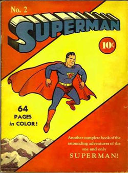

Hi, did you vote? Do you think our elections choose the best leaders? Even if they're not the best, the people chose them, right? It's important that we have the power to choose our representatives. That's why I'm writing to you about approval voting.
Approval voting gives a better representative. When you compare approval to what we do now, approval gets better information from the voters, gets better candidates to run, and has less problems. Approval chooses superman.
Better Information from Voters
Approval gets better information from the voters because approval asks you to choose the better candidates. That can mean more than one. Try it out below. Move the voter around the arena. See what candidates he chooses. (There are 3 candidates: blue, yellow, and red.) See that he's choosing the candidate he's closest to. He's also avoiding the candidate he's furthest from. And for the in-between, he draws a line. Anybody inside is better than anybody outside. This is a relative judgement.
Approval Voting Basics: Pick the Better Candidates
In an election, he also needs to decide one more thing: what is he risking? Things do get a little more complicated whenever you add more people to a situation. The above was a simple model, and we just set it so that the line is drawn halfway between the best and worst candidates. In a real election, the voter will be checking the polls to see where he should draw the line. He's going to see who has a shot to win, and he's going to draw a line between them because that will decide the election. Try it out below. See that when blue isn't doing well, red voters don't need to use yellow as a fallback.
Consider Risk. Decide Which Frontrunner is Better.
Approval asks for this judgement from every voter. Then the votes are added and the most votes wins. That's the group judgement. Try it out below. Move the voter group to see which candidate wins. See that when the center moves toward a candidate, that candidate wins.
Approval Election
Compared approval to the way we vote now. Right now, you can only choose one candidate when you go to vote, and that limits you. You can only say which candidate you like best. Try it out below. See that your opinion is limited to one candidate.
Choose One (the way we vote now)
And you also need to decide one more thing: what are you risking? If your favorite doesn't win, then the worst candidate might win. In a real election, you're going to look at the two frontrunners and pick one. Try it out below. See that you only get two choices.
Risky Choose One (the Real way we vote now)
In an election, every voter faces this risk. And the only thing they can do is pick from two. Try it out below. See that the winner isn't always the candidate closest to center.
A Risky Choose One Election (Our General Election)
To recap:
- Approval chooses a better winner.
-
Better information is collected from the voters.
- It asks for the better candidates (plural).
- It asks for a risk assessment.
- A group judgement is formed and the candidate nearest the center wins.
-
Compare to the way we vote now:
- It asks for one candidate.
- It asks for a risk assessment which leads to a bad choice between two.
- A group judgement is formed but the center doesn't always win.
-
Better information is collected from the voters.
Here's a sandbox where you can try changing the number of candidates, the number of voters, and the election method.
Sandbox so far
(By the way, there are a couple different names for our election method that we use now: first-past-the-post (FPTP), single-member plurality (SMP), or just plurality voting. First-past-the-post is a term that has been used for around 100 years. It comes from horseracing and it means the first horse to cross the finish line, even if the horse had been disqualified. It was a negative term used by people that wanted to improve the way we vote because they saw that the wrong winner was being selected. Single-member means you pick one winner as opposed to multiple representatives. Plurality means the highest count of first choices wins.)
(Also, when we say election method what we mean is what information we write on our ballots about what we want and how we combine that information into what the group wants.)
Map
We're now going to take a step up the ladder of abstraction from one election to many possible elections. If you've played around with the sandbox for a while, you might start putting together a map inside your head of where the voters have to go in order for a candidate to win. Each candidate has his own territory. I added this to the election by putting the voter center at every pixel on the map and seeing who wins. Then I colored the pixel with the winner's color. Try it out. See that whenever you move the center voter to the red territory, the red candidate is the winner.
Map of Winner
Better Candidates
In this next part, I'll describe how approval voting gives an opportunity to candidates to run for office. We'll change perspective to consider what a candidate sees.
A candidate will win if he moves to the center. A candidate thinking about running for office would think about what his campaign message is. He would consider where that would put him on the political spectrum (left to right). If everything looks good, he would start his campaign. Try to see what a candidate sees, below. This is a map of every place the yellow candidate could put his campaign message, and who would win if he entered the race. Move him toward the center of the voters and see that he wins. This example works for every candidate, so all the candidates will want to be at the center and try to be as broadly representative of the entire population. This is good because it serves the purpose of an election that the people have the power to choose their representatives.
The Winners' Circle
Compare that to what we have now at the general election and you'll see that some nice candidates can't run. Right now, once the two front-running candidates are settled on, there isn't much opportunity for another candidate to be running against them. Try it out below. Move the yellow candidate to the center and see that voters are still stuck on the frontrunners. I have set this example so that about a quarter of voters who like yellow best will actually vote for him as "true believers". See that this causes yellow to become a spoiler. When yellow moves toward red, red loses because yellow takes votes away from red. This is the spoiler effect. If yellow was nice, he would drop out to help red win because they're on the same side. Yellow is a jerk, so he stays in and spoils the election for red. Nice candidates dropping out is very common in the primaries. With the way we vote now, primaries are necessary to prevent the vote-splitting we see with yellow and red. And primaries are also the reason why we can't vote for many nice candidates in the general election.
The Spoiler Effect
A primary will pick the candidates in a kind of haphazard way. Try it out below. The orange candidate wins the primary vote because yellow and red split their vote. Then orange wins the general election. The candidates that were more representative of the entire population, like red, didn't make it out of the primary because they either didn't play to their base or they split their vote with too many other candidates in the primary.
Primary Shennanigans: Divide and Conquer
- Approval chooses a better winner.
-
Better information is collected from the voters.
- It asks for the better candidates (plural).
- It asks for a risk assessment.
- A group judgement is formed and the candidate nearest the center wins.
-
Compare to the way we vote now:
- It asks for one candidate.
- It asks for a risk assessment which leads to a bad choice between two.
- A group judgement is formed but the center doesn't always win.
-
Better information is collected from the voters.
-
There are better candidates running.
- The incentive is for candidates to move to the center.
- Nice candidates are available that otherwise are staying out of the race because they'll cause a spoiler effect.
- There is no need for a primary that chooses candidates that are, at best, only good for half the population.
Putting it all together, here's a sandbox for you to try out all the different systems and to make your own scenarios:
SANDBOX MODE! (link to just this)
From Nicky Case: One hope for Sandbox Mode is that readers can debate with me and each other using this tool! Not just telling me I'm wrong, but showing me I'm wrong. Granted, this tool is very limited – it doesn't handle strategic voting or imperfect information – but I think it's a start, and may help improve our Democratic Discourse™
From Paretoman: if you'd like your own models included here, save it, copy the saved link, and tweet it with the hashtag #smartvotesim.